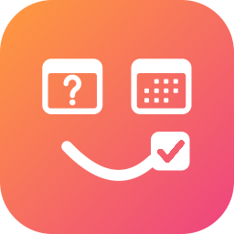
Dein Gerät weiß längst, wann du frei bist. AskWhen.me lässt es antworten: eine Seite unter askwhen.me/deineseite, auf der jemand eine Zeit auswählt und fragt — von einem Server, der deinen Kalender nie sieht.
AskWhen.me ist ein Abo darin: 90 Tage kostenlos, danach 19,99 $ im Jahr.
Dienstag. Ein Angebot, keine Reservierung: Dana bestätigt jede.
Drei Zeiten gehen über die Leitung, sonst nichts. Die Anfrage kommt zu Dana zurück, und nichts landet in ihrem Kalender, bevor sie Ja sagt.
Eine Buchungs-App hält deinen Kalender, um auf der Stelle eine Zeit zusagen zu können. AskWhen.me hält ein paar Zeiten am Tag — und eine Frage.
Dein Gerät veröffentlicht ein paar Zeiten, zu denen es gefragt werden möchte, und sonst nichts. Wählt jemand eine aus, kommt die Anfrage zurück auf dein Gerät, das deinen Kalender erneut prüft, bevor etwas geschrieben wird. Solange du es nicht einschaltest, stellt Calendar Mirror überhaupt keine Netzwerkanfrage.
Eine Seite, von der aus jeder fragen kann, und ein Link für eine Person.
askwhen.me/deineseite. Wer die Adresse hat, kann eine Zeit wählen und fragen. Jede Anfrage wartet auf dich.
An eine Person geschickt. Ist die gewählte Zeit noch frei, antwortet dein Gerät für dich.
Wer die Adresse hat, kann fragen. Jede Anfrage wartet auf dich.
Aus den Kalendern, die du bestimmst: ein paar am Tag, innerhalb der Stunden, die du angibst, mit Luft um das, was schon dasteht.
Sie gehen unter dem Namen, den du gewählt hast, auf askwhen.me/deineseite. Die Seite zeigt eine Liste von Zeiten und sonst nichts über dich.
Die Person wählt eine Zeit, sagt, wer sie ist, und bestätigt ihre E-Mail. Die Anfrage wartet auf dein Gerät; der Server hält sie, mehr nicht.
Es prüft zuerst deinen Kalender erneut. Nimmst du an, schreibt dein Gerät den Termin, und die Person bekommt eine Kalenderdatei per E-Mail.
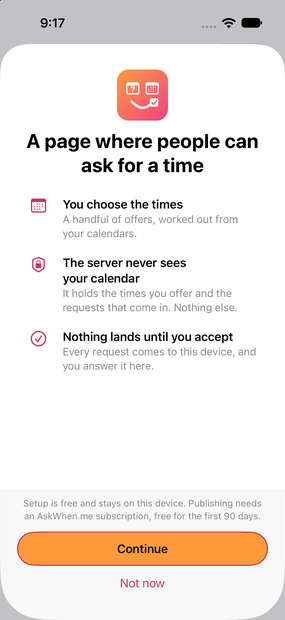
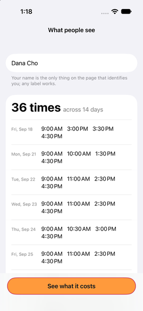
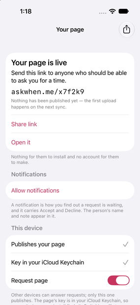
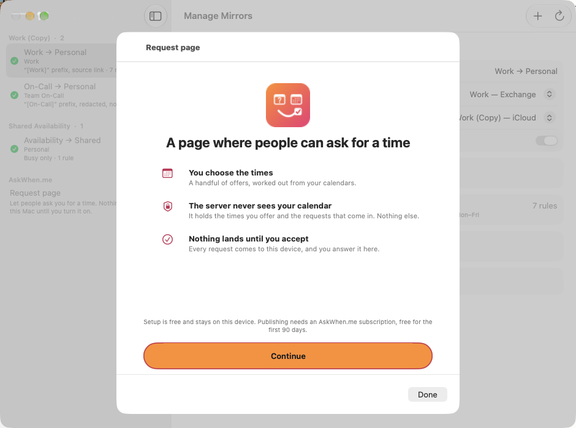
Deine Seite sagt, wem sie gehört, und sonst nichts über dich. Die Zeiten erscheinen in der Zeitzone der fragenden Person, und jeder Schritt sagt: Das ist ein Angebot, keine Reservierung.
Eine Woche voller Zeiten, in der Zone der Besucherin. Die Zeile unter deinem Namen ist deine.
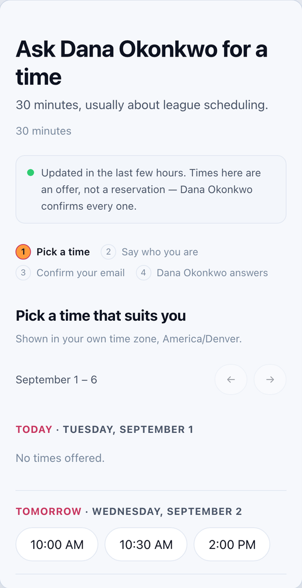
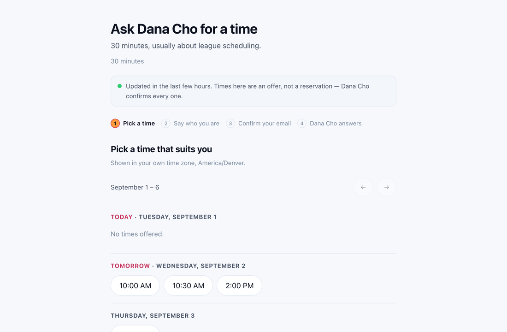
Ein Name und eine E-Mail. Kein Account. Die Adresse sieht Dana erst, wenn sie bestätigt ist.
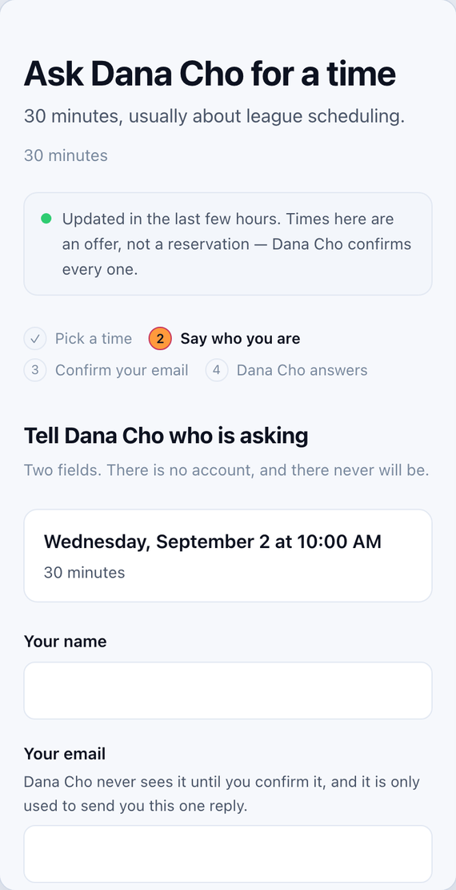
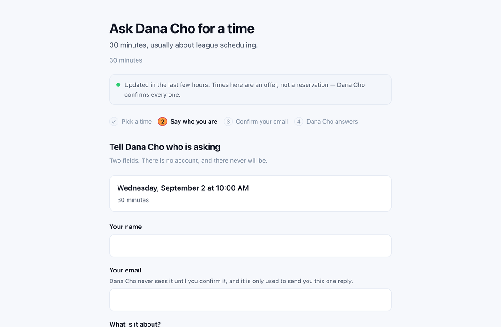
Die Anfrage wird fünfzehn Minuten gehalten. Nichts erreicht Dana, bevor der Link angeklickt ist.
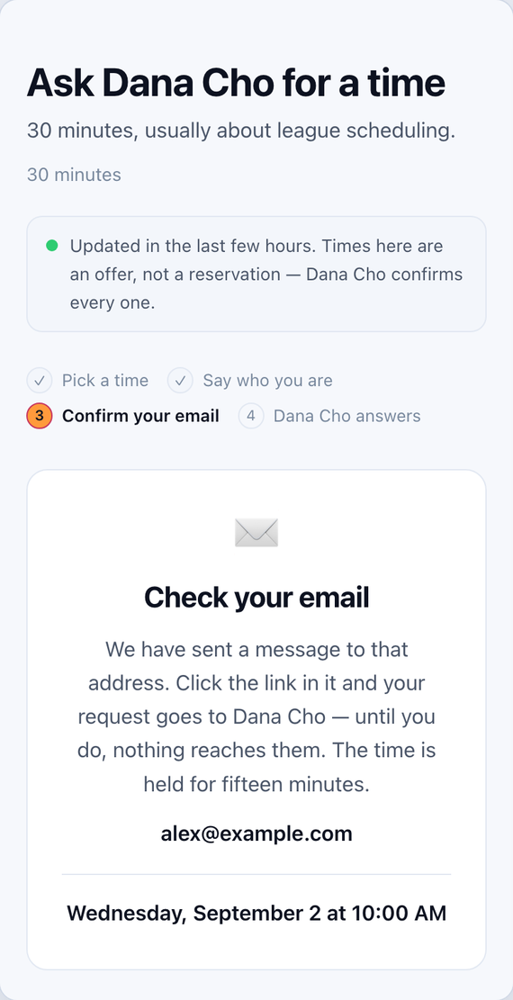
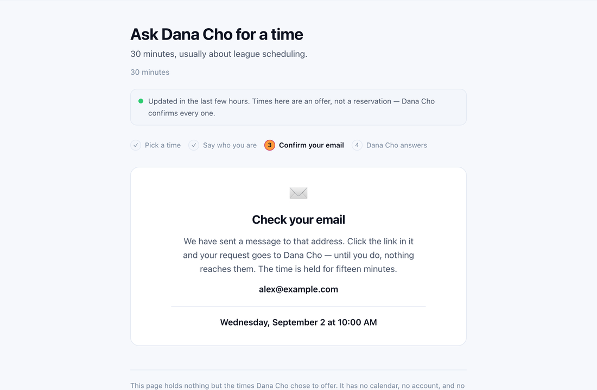
Dana sagt auf ihrem Gerät Ja, und die Einladung kommt per E-Mail.
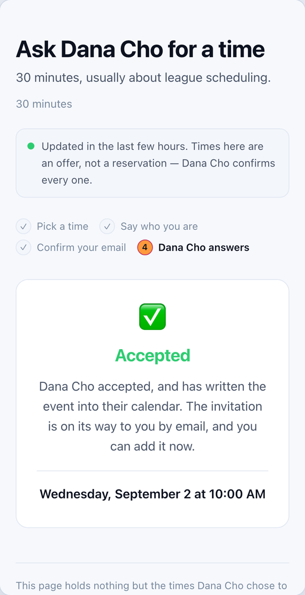
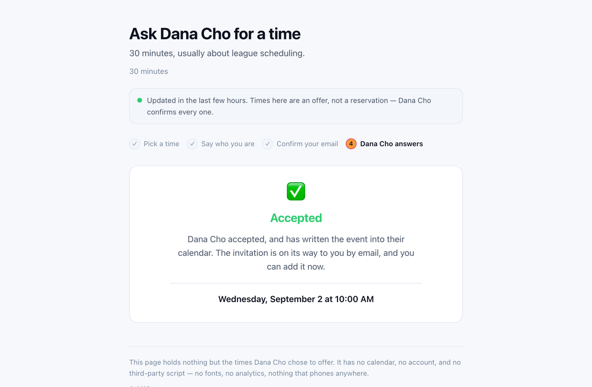
Eine Seite, gesetzt für die Breite, die sie bekommt. Auf keiner Seite der Frage muss eine App installiert werden.
Der Entwurf ist ein totes Postfach: Zeiten hinein, Anfragen heraus — und dem Server wird nie gesagt, wer du bist. Die Datenschutzseite sagt dasselbe vollständig, samt der Aufbewahrungsfristen.
Send times legt deine nächsten drei freien Zeiten in die Zwischenablage, fertig zum Einfügen in eine Nachricht, eine E-Mail oder Slack. Mit eingeschaltetem AskWhen.me trägt sie einen Link.
Der Link ist nicht die Adresse deiner Seite. Er öffnet einmal, eine Woche lang, für die Person, der du ihn geschickt hast — eine weitergeleitete Nachricht ist also keine offene Tür. Und weil du ihn geschickt hast, gibt es keine E-Mail-Bestätigung: Ist die gewählte Zeit noch frei, sagt dein Gerät für dich Ja. Ist sie weg, wird das gesagt, und nichts wird geschrieben.
90 Tage kostenlos — lang genug, dass wirklich jemand Fremdes fragt — danach jahresweise. Gekauft über den App Store, die Zahlung liegt also bei Apple und wir sehen sie nie; Verlängerung, Kündigung und Erstattung richten sich nach Apples Bedingungen. Nach dem Abo wird am Ende der Einrichtung gefragt, wenn du die Seite gesehen hast, die du veröffentlichen würdest.
| Stufe | Was du bekommst | Pro Jahr |
|---|---|---|
| Request Page | Eine Seite unter askwhen.me/deineseite. Die ersten 90 Tage sind kostenlos. | 19,99 $ |
| Custom Subdomain | Ein eigener Name, du.askwhen.me, und mehr als eine Seite. | 34,99 $ |
| Custom Domain | Deine Seite auf einer Domain, die dir gehört — ein DNS-Eintrag genügt. | 69,99 $ |
US-Preise; den Gegenwert anderswo setzt Apple. Die Nutzungsbedingungen sagen, was mit deiner Seite und deiner Adresse passiert, wenn ein Abo endet. Sie sind kurz.
Calendar Mirror ist eine kleine App, die eine Kopie eines Kalenders in einem anderen hält, in eine Richtung. AskWhen.me ist das Einzige darin, das mit einem Server spricht, und es ist aus, bis du es einschaltest; die Zeile steht unter Background sync. Über Calendar Mirror.
AskWhen.me ist 90 Tage kostenlos, danach 19,99 $ im Jahr.